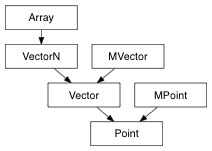

A 4 dimensional vector class that wraps Maya’s api Point class,
a.angle(b, c) –> float Returns the angle (in radians) of rotation from point b to c around a. Note that this angle is not signed, use axis to know the direction of the rotation
alias of MPoint
a.axis(b, c) –> Vector Returns the axis of rotation from point b to c around a as the vector n = (b-a)^(c-a) if the normalize keyword argument is set to True, n is also normalized
p.bWeights(p0, p1, (...), pn) –> tuple Returns a tuple of (n0, n1, ...) normalized barycentric weights so that n0*p0 + n1*p1 + ... = p. This method works for n points defining a concave or convex n sided face, always returns positive normalized weights, and is continuous on the face limits (on the edges), but the n points must be coplanar, and p must be inside the face delimited by (p0, ..., pn)
p.cartesian() –> Point Returns the cartesianized version of p, without changing p.
p.cartesianize() –> Point If the point instance p is of the form P(W*x, W*y, W*z, W), for some scale factor W != 0, then it is reset to be P(x, y, z, 1). This will only work correctly if the point is in homogenous form or cartesian form. If the point is in rational form, the results are not defined.
p.center(q, r, s (...)) –> Point Returns the Point that is the center of p, q, r, s (...)
a.cotan(b, c) –> float : cotangent of the (b-a), (c-a) angle, a, b, and c should be MPoints representing points a, b, c
p.homogen() –> Point Returns the homogenized version of p, without changing p.
p.homogenize() –> Point If the point instance p is of the form P(x, y, z, W) (ie. is in rational or (for W==1) cartesian form), for some scale factor W != 0, then it is reset to be P(W*x, W*y, W*z, W).
Returns true if both arguments considered as Point are equal within the specified tolerance
p.planar(q, r, s (...), tol=tolerance) –> bool Returns True if all provided points are planar within given tolerance
p.rational() –> Point Returns the rationalized version of p, without changing p.
p.rationalize() –> Point If the point instance p is of the form P(W*x, W*y, W*z, W) (ie. is in homogenous or (for W==1) cartesian form), for some scale factor W != 0, then it is reset to be P(x, y, z, W). This will only work correctly if the point is in homogenous or cartesian form. If the point is already in rational form, the results are not defined.